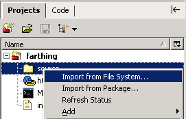
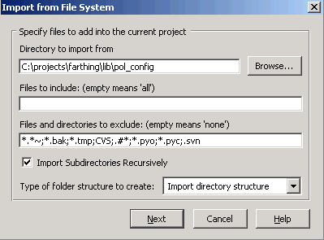
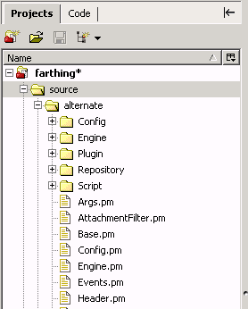

Right-click a folder in a project and select Import
from File System.

Select the directory, specify inclusion and exclusion
parameters, and select Import directory
structure as the folder structure.

The imported file system has the same structure as the disk.